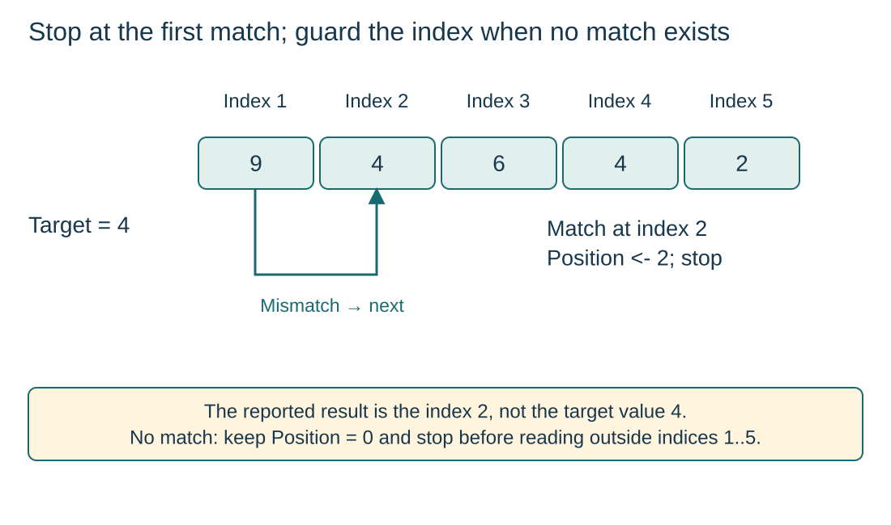

Compare each element with the search value
S10.06.A01
Visual overview
Stop at the first match; guard the index when no match exists

Visual transcript
- Search Values[1:5] = 9, 4, 6, 4, 2 for target 4.
- Index 1 is a mismatch; index 2 matches, so Position = 2 and the second 4 at index 4 is never inspected.
- If the target is absent, Position stays 0 and the search stops after checking index 5, before any Values[6] access.
Core explanation
Find the first match
- Initialise: Index starts at the lower bound and Position at 0. Zero means not found because it is outside the 1-based bounds.
- Guard: Continue only while Index is valid and Position is still 0.
- Compare: On a mismatch advance Index; on a match store Index in Position. The next test then stops the loop.
Return a position without reading past the array
The array access is inside the guarded body. An absent target checks indices 1 through 5 and stops before Values[6]. For [9, 4, 6, 4, 2] and target 4, report index 2; later equal values are not visited.
Linear search procedure
- InitialiseSet Index to the lower bound and Position to 0.
- ContinueRepeat while Index is in range and no match has been saved.
- CompareSave Index when Values[Index] equals Target; otherwise advance Index.
- ReportOutput the saved position or the not-found sentinel.